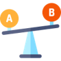

Maintaining regular physical activity can result in improvements in our mental health including improvements around: sleep, mood, stress and anxiety, self-esteem, reduced risk of depression, connecting with people.
Some carers may feel from time to time that they:
Are not very confident doing exercise, or comfortable with their body; |
Don’t feel sporty enough and wish things could be a certain way. |
 Find themselves feeling bad when comparing their physical fitness to others. |
It’s really important to recognise that these feelings are often passing thoughts - they are not facts. Left unopposed, they can have a powerful impact on our behaviours and ability to reach our goals
A few tips around undertaking physical activity are: